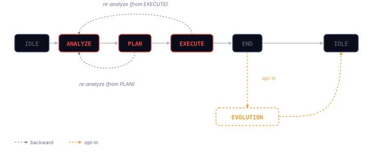

APE treats your AI coding assistant as a finite state machine with a declarative transition contract. The CLI enforces pre- and post-conditions. Intelligence emerges from orchestration and memory — not from any single agent's capability.
Six states if you count rest. IDLE is the entry and exit. ANALYZE, PLAN, EXECUTE are the core. END is the PR gate. EVOLUTION is opt-in. The forward flow is linear; backward edges from PLAN and EXECUTE to ANALYZE exist because re-analysis is legal, not a recovery hack.

IDLEANALYZE · SOCRATESdiagnosis.md.PLAN · DESCARTESplan.md.EXECUTE · BASHŌEND · PR gategh. No agent; the CLI orchestrates.EVOLUTION · DARWIN opt-inTransitions aren't code — they're data. A YAML file declares every legal transition, its trigger event, its prechecks, and its effects. The CLI reads this file at runtime and refuses any transition the contract doesn't permit.
# code/cli/assets/transition_contract.yaml (excerpt) transitions: - from: ANALYZE to: PLAN event: complete_analysis prechecks: - diagnosis_exists - issue_linked effects: - set_state: PLAN - invoke_agent: DESCARTES - from: PLAN to: ANALYZE event: start_analyze # backward transition: re-analysis is legal prechecks: - human_approval
This is the core artifact. It's what makes APE reproducible across models: every ape reads the same contract and can only produce the transitions it permits. If a future target (Claude, Codex, Gemini) processes a different prompt, the contract constrains the output shape identically.
Project memory lives in two places, both markdown, both in git. No vector DB. No cloud dependency. The repository is the database.
.ape/ — per-repo statestate.yaml — current FSM state and last transitionconfig.yaml — feature flags (evolution.enabled, target, etc.)mutations.md — history of DARWIN's accepted mutationsdiagnosis.md, plan.md — active cycle's artifactsdocs/ — project knowledgememory-read skillindex.md per directory acts as a primary index
Database-inspired indexing without a database. Directories are tables. Files are rows. Frontmatter is the schema. index.md is the primary index. An agent with grep is more than an agent with a vector store for this scale of knowledge. Dual legibility: the same file an agent reads is the same file you review in GitHub. No translation layer.
Spec-only today. The idea: ape state transition should gate on human approval only when the engineering risk warrants it. Low-risk mechanical transitions (scaffolding, formatting, test scaffolding) proceed silently. High-risk ones (schema changes, production deploys, external API mutations) demand explicit approval.
If the framework carries the weight, the model gets lighter.
Three scenarios, same conclusion. Cloud models get expensive? APE works with local ones. Frontier models plateau? DARWIN becomes the only improvement mechanism left. Models keep improving? APE amplifies the gains without rewriting the runbook. The framework benefits from disorder — antifragile across the AI market.
The thesis APE exists to test: given an identical task, a smaller model running APE outperforms a frontier model freestyling. The evidence lives in a metrics.yaml dataset that doesn't fully exist yet — the reproducibility score sits at 2/10 until 30 clean cycles and a multi-target test matrix land. See APE builds APE →.